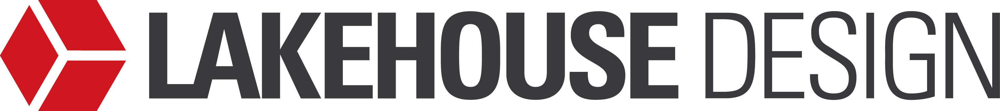
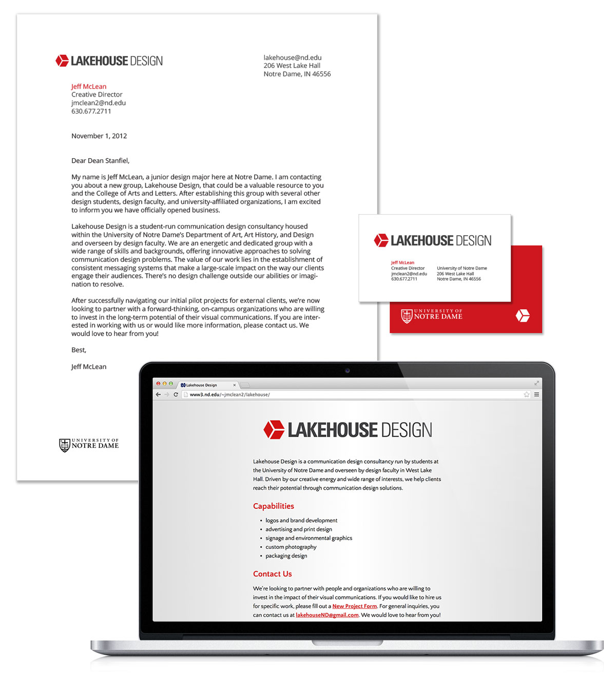
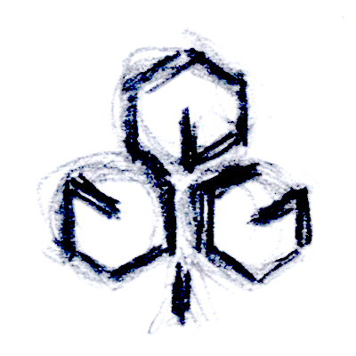
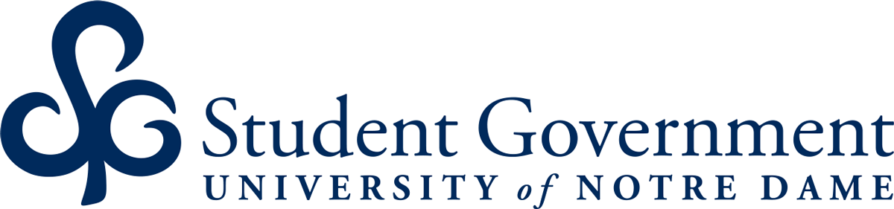
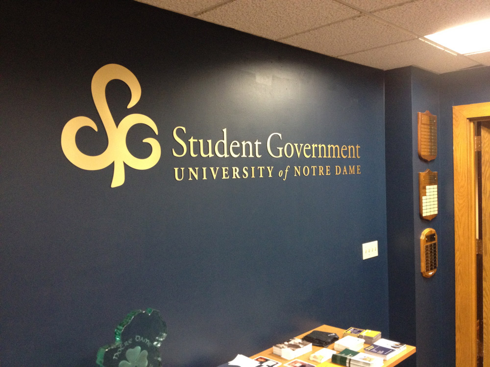

All Projects
Lakehouse Design
Bringing undergraduate designers together in a student-run firm at the University of Notre Dame.
After not getting paid for a freelance design job at school and having no recourse, I realized that there was an unmet need within our student community for structure, mentorship, and collaboration regarding our extracurricular design work. I spent the next two years developing a space within the University of Notre Dame for a student-run design business to begin operations. The design department named the project “Lakehouse” after West Lake Hall, our new lakeside location on campus.
You don't need a big office to get good work done.
When we officially started in 2012, our first task was creating our own visual identity. The logo is an homage to the very first design project in the ND curriculum, in which students learn painful attention to graphic detail by hand-rendering a cube in perfect perspective.

Our cube, ironically, ended up being isometric.

Curated Lakehouse Work
Note: all work on this page was collaboratively executed by members of the Lakehouse design team while I was creative director.
2012/13: Dan Azic, HyeSoo Kim, Laura Vranderic
2013/14: Laurel Komos, Samantha Coughlin, Raissa Multaputri, Catherine Kesman
Hiller Carbon graphic identity
Hiller is a Tampa-based aviation fuel company.
ND tech forum promotion materials
The forum is an annual conference for Silicon Valley entrepreneurs and Notre Dame grads held at the university's affiliated startup incubator.
“The Shirt” logo
The Shirt is the official fan T-shirt for Notre Dame football, which is redesigned annually. They needed a logo that could connect disparate shirt designs under the Notre Dame athletic brand.
Non-lakehouse work
I also had a significant presence in design at Notre Dame outside of Lakehouse, including my work for the Holy Half Marathon and Student Government.

Even after settling on a concept, it took loads of iterations to get the form of the logo to feel right.

The curves of the logo had to feel at home with Adobe Garamond Pro while maintaining a friendly and approachable character.

They loved it enough to have it laser cut and mounted on the wall in the student union.
All Projects